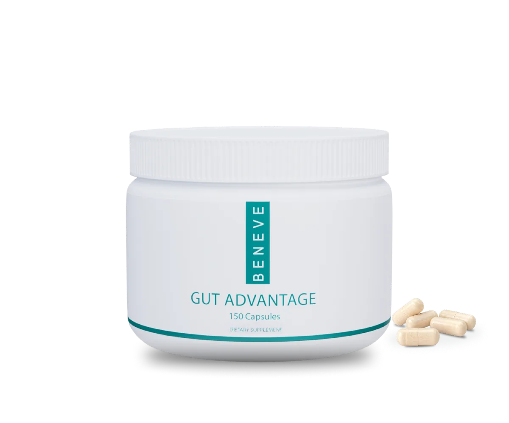
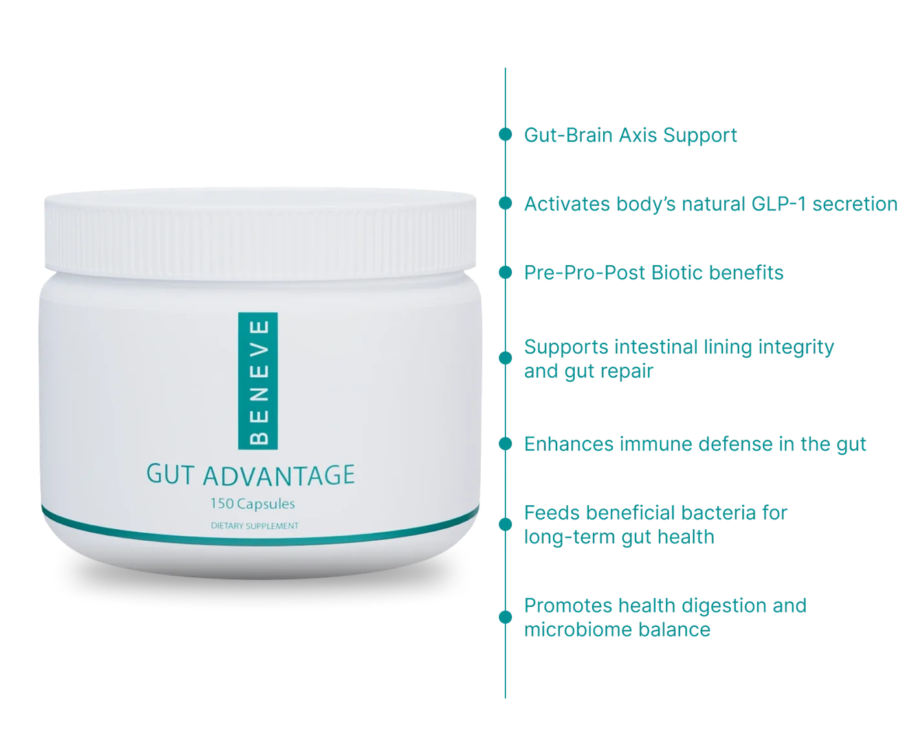
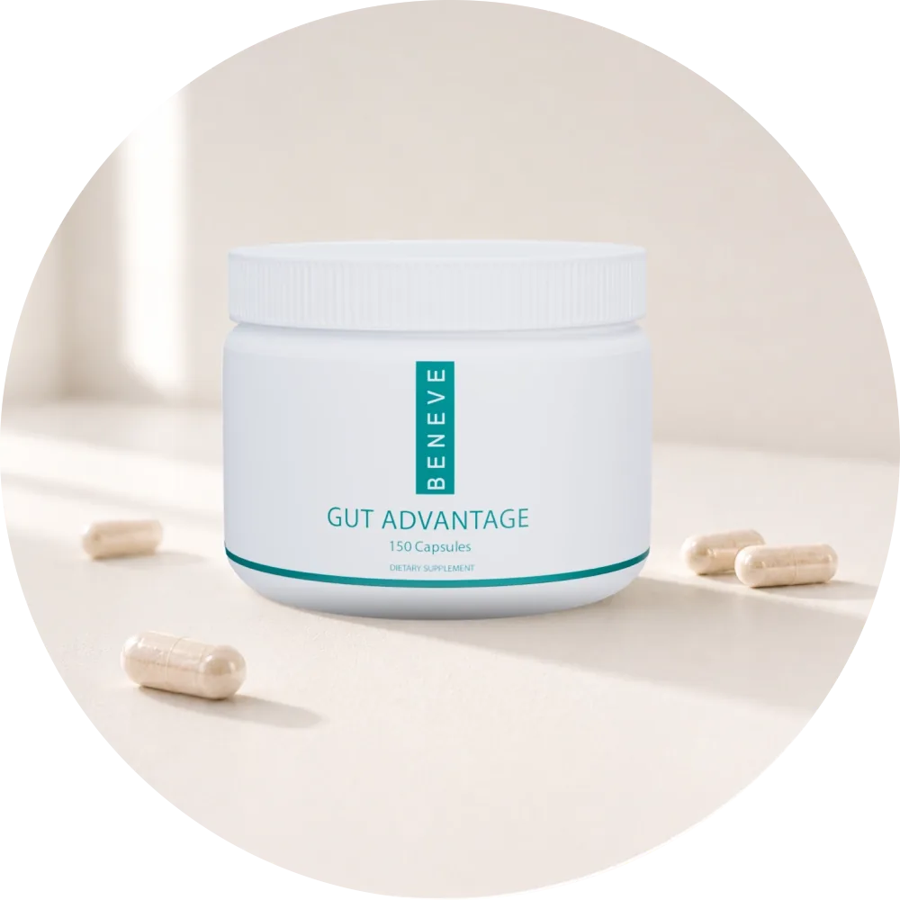
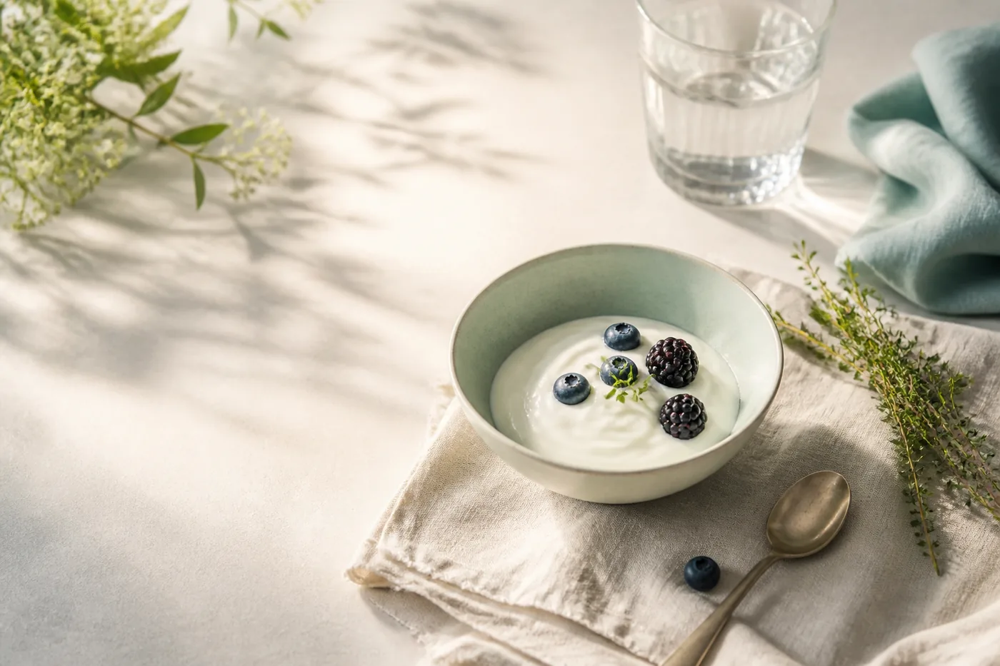
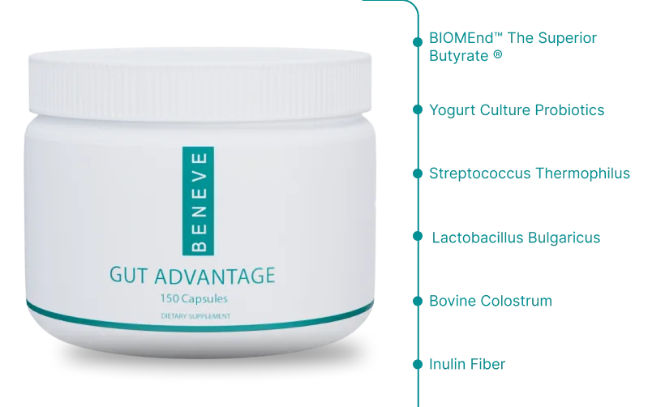
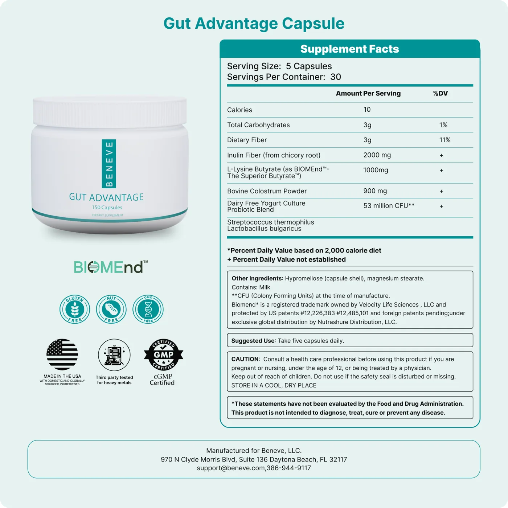

Gut-Brain Support
Supports the connection between your gut and brain for overall wellness.
Digestive Balance Support
A true pre, pro, postbiotic formula featuring butyrate and colostrum to help nourish the gut environment and support overall digestive wellness.

A comprehensive approach to overall wellness and weight management.
Supports the connection between your gut and brain for overall wellness.
Features pre, pro, and postbiotics with colostrum.
Supports natural pathways linked to appetite and mood.
Designed to support digestion, immune health, and overall balance.
What makes it different

Combines pre, pro, and postbiotics to support the gut from multiple angles.
Prebiotics feed what is already there. Probiotics add to it. Postbiotics are what those bacteria produce. Most formulas pick one. This one runs all three together.

Includes colostrum with immunoglobulins to support gut integrity and immune function.
Colostrum is the first milk, the one built to get a brand new digestive system working. That is the job it is doing here.

Designed to support natural GLP-1 activity linked to appetite and metabolic function.
GLP-1 is a hormone your own gut already makes. This is about supporting the pathway you have, through food and formula, every day.
Targets the connection between gut health and overall wellness, including mood and cognition.
The gut and the brain talk constantly. Support one and you are supporting the other.
Premium ingredients


The guide gave you the foods. Gut Advantage is the daily piece that works alongside them.
Get Gut AdvantageThese statements have not been evaluated by the Food and Drug Administration. This product is not intended to diagnose, treat, cure or prevent any disease.